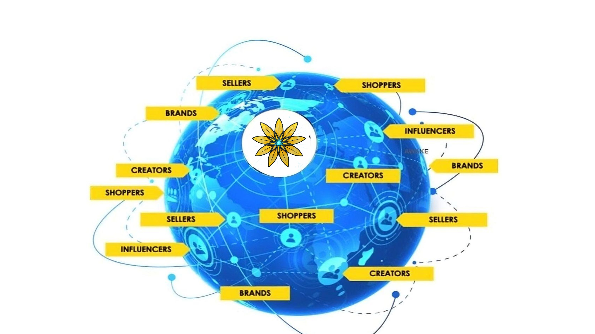
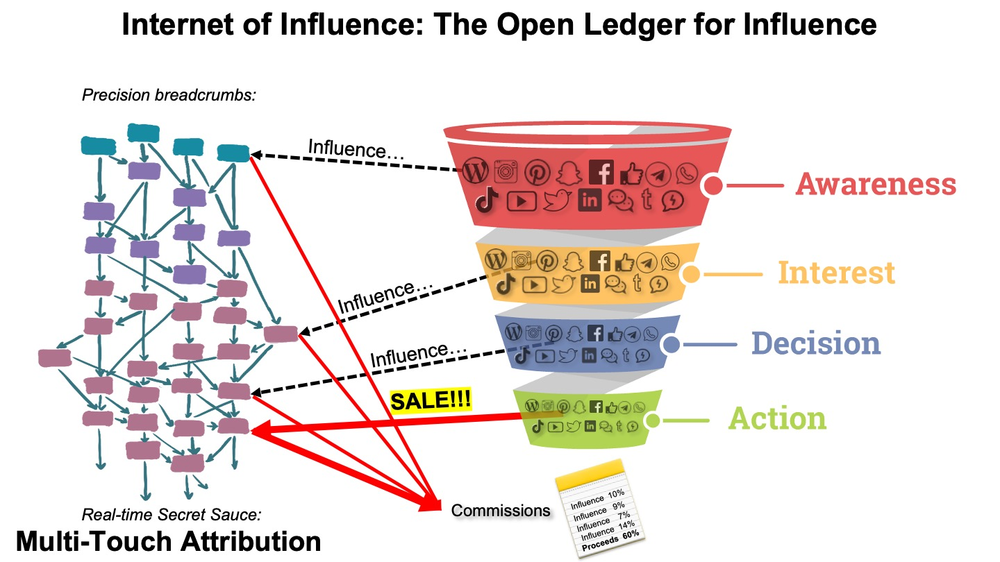

Spend → Impressions → Clicks → Maybe Customers
Pay upfront for attention, whether it converts or not.A new distribution model for brands
Conversions through conversations.
Turn customer acquisition into a performance-paid distribution network.
Grow through the people who already influence your customers. Coselling.ai tracks who contributes to sales and rewards them when commerce happens.

The commercial shift
Only pay when you sell.
Conversations → Customers → Sales → Reward Contributors
Share value after commerce happens.A category of participant
What is a Coseller?
A coseller is anyone who helps create a sale — and shares in the value they create.
They are not just creators or affiliates. They are the people and networks that make a recommendation credible, a conversation useful and a purchase possible.
CustomersCreatorsExpertsCommunitiesPublishersNetworks
The economic loop
The Network is the Market.
Coselling gives brands a way to activate the people already shaping demand — then make the value exchange visible, measurable and fair.
More Cosellers
→ More Conversations
→ More Commerce
BrandProductsCosellersConversationsBuyersSalesSales → Attribution → Rewards → Cosellers→ More Conversations
→ More Commerce
More Cosellers → More Conversations → More Commerce → More Rewards → More Cosellers
How Coselling works
Build a distribution network that compounds.
Activate
Turn customers, creators and communities into cosellers.
Influence
Let products and recommendations travel naturally through conversations.
Attribute
Understand who contributed from introduction through purchase.
Reward
Allocate value to the people who helped create the sale.
Compound
Successful commerce strengthens and expands the network.
For brands and merchants
Acquire customers through the people they already trust.
Your existing customers, creators and communities are not just an audience. They are potential distribution.
- Activate new customer acquisition without buying attention upfront.
- See who actually contributed to commerce, across the full path to purchase.
- Reward contributors automatically and make your network more valuable over time.
Networks powered by Coselling.ai
Commerce travels further when trust travels with it.
Brands, publishers and communities are building a more accountable way to distribute products. Selected network examples will appear here soon.
The mechanism behind the model
Everyone who contributes to a sale should be able to participate in its value.
Coselling creates a first-party record of the path from introduction through engagement to purchase, allowing brands to understand and reward the contributors who helped create commerce.

Supporting infrastructure
Technology that makes the economics work.
AttributionCatalogCommerceCheckoutPaymentsWalletsIntegrations
Explore the platform ↗Choose your role in the network
Everyone can help commerce happen.
The network opportunity
Your customers already have conversations about what to buy.
Turn those conversations into your distribution network.
Start a Coselling Network →